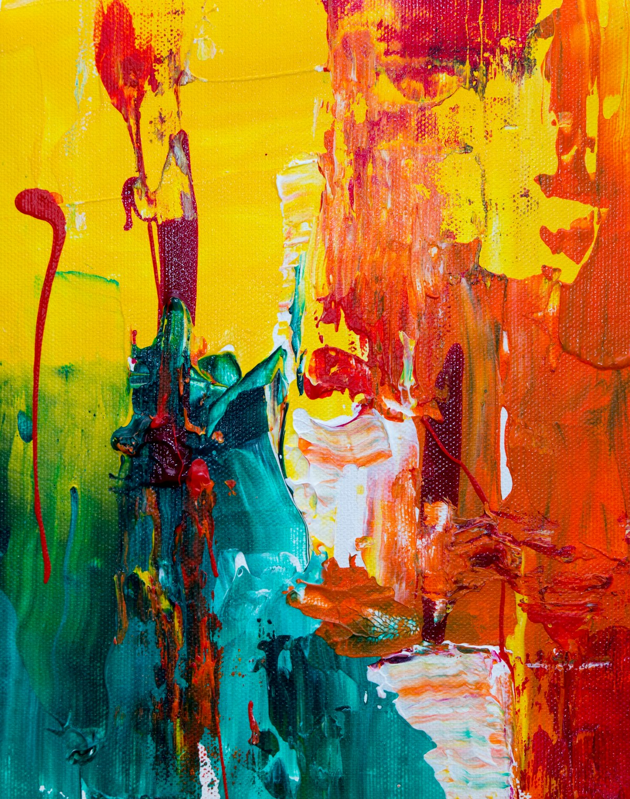
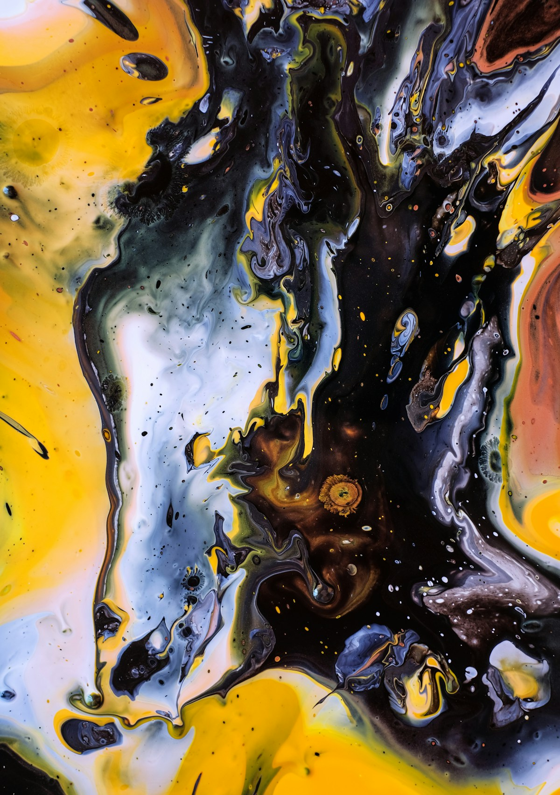
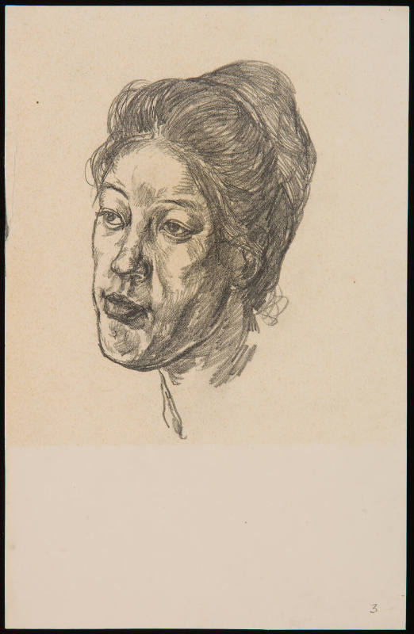
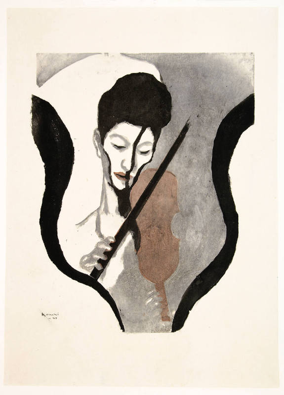

白川 凪42.1k
shirokawa_nagi
所有结构只使用同一组冷中性色。色彩留给画师例图；冷蓝光只在选中与主操作时出现。


横向展开只改变图像占比，不引入新的强调色。你看到的是风格差异，而不是组件差异。
明亮天空、干净轮廓和克制的冷色关系。
强明暗、局部暖光与更厚重的人物塑造。
高对比墨色、速度感和明确的笔触方向。
辽阔天空、远景层次与安静的电影构图。
预设卡片像实体样张一样向上堆叠。边界和底光只帮助理解层级，不覆盖图片本身。
柔和肤色、低对比阴影与轻微的粉彩空气感。
深色环境、侧向暖光和更集中的人物视线。
广角远景、低地平线与细腻的云层色彩过渡。


“例图已经足够丰富，界面只需要把它们安静地组织起来。”
默认暗色、统一灰阶、单一冷光。下一步可以把这套视觉系统映射到现有功能页面。
回到工作台